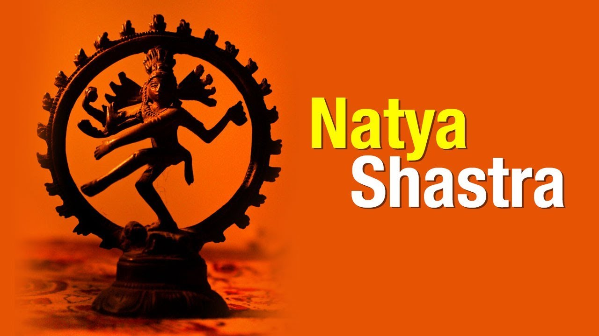
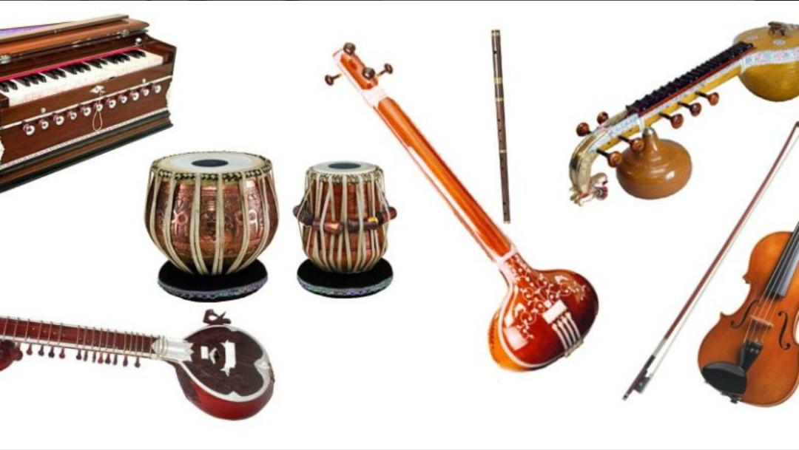
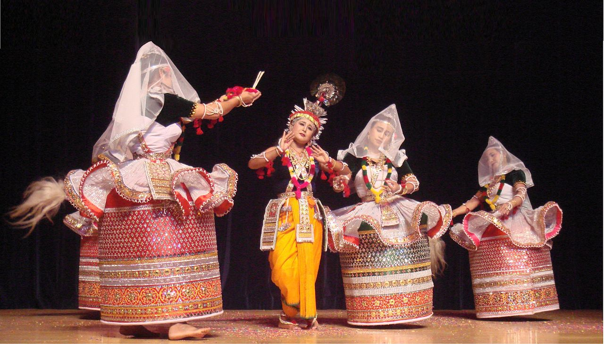
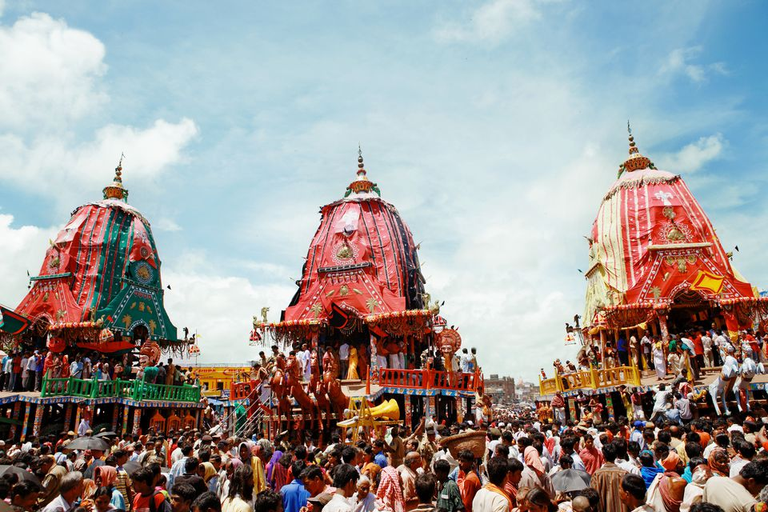
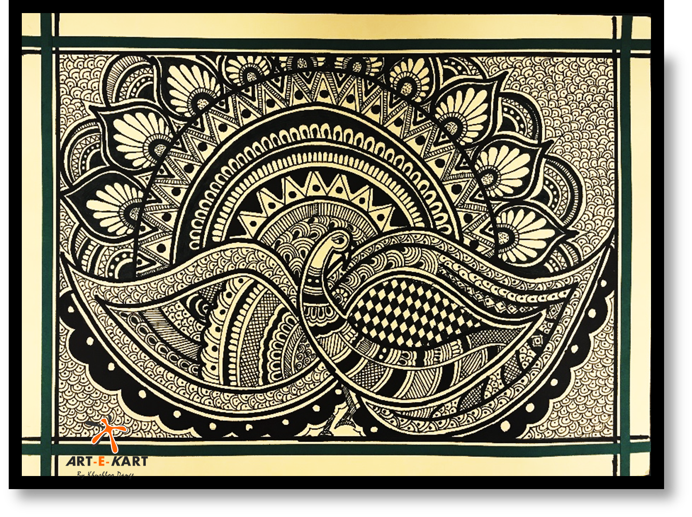
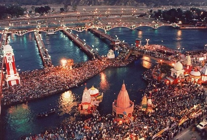
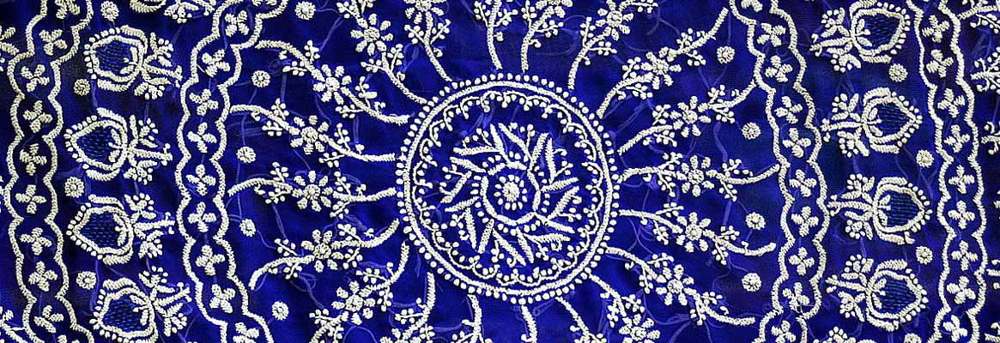
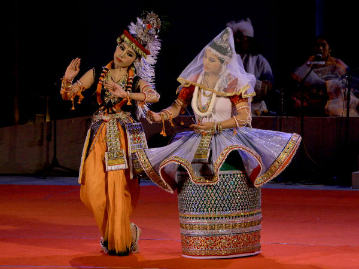
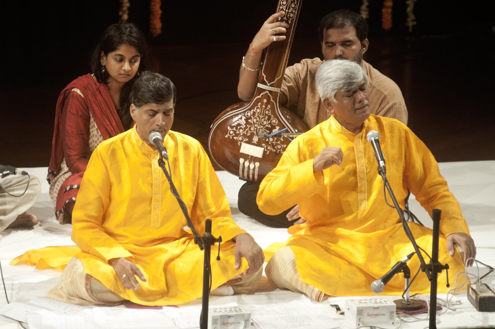

Login to Continue
Haven't Registered before?
Haven't Registered before?
Welcome. You're currently logged in.

The quiz is 5 minutes long and you can only attempt it Once.
Once you enter the quiz, please don't logout/exit/reload and try to login again. You won't be allowed to take this quiz again.
 The Nātya Shastra is the principal work of dramatic theory, encompassing dance and music, in classical India. It is believed to have been written during the period between 200 B.C.E. and 200 C.E. The Natya Shastra is the outcome of several centuries of theatrical practice by hereditary actors, who passed their tradition orally from generation to generation. 'Natya-Shastra' the main source of India's classical dances was written by
 Which is the most ancient musical instrument of india ?
 The feet movements in this dance form are soft and graceful and the movements are not emphasized by the use of anklets on the dancer's ankles, unlike the other Indian classical dances. As an exception, which Indian dance form doesn't involve anklets as a part of the dancer's attire?
 Ratha Yatra is a Hindu festival held at Puri in the state of Odisha, India. It is the oldest Ratha Jatra taking place in India and the World, whose descriptions can be found in Brahma Purana, Padma Purana, and Skanda Purana and Kapila Samhita. This Rath Yatra at Puri is celebrated in honour of which Hindu deity?
 Often characterized by complex geometrical patterns, Madhubani paintings are known for representing ritual content for particular occasions, including festivals, religious rituals, etc. The colors used in these paintings are usually derived from plants and other natural sources. These colors are often bright and pigments like lampblack and ochre are used to create black and brown respectively. Instead of contemporary brushes, objects like twigs, matchsticks and even fingers are used to create the paintings.'Madhubani', a style of folk paintings, is popular in which of the following states in India?
 Kumbh Mela or Kumbha Mela is a mass Hindu pilgrimage of faith in which Hindus gather to bathe in a sacred or holy river. The Kumbh Mela is held every 12 years. The last Mahakumbh of the 20th century was held at
 Chikankari is a skill of more than 200 years old. It literally means 'embroidery'. It was originally done with a white thread on a white cloth, hence the name 'white embroidery'. Now, it is done on a variety of fabrics and in a spectrum of colours. Which of the following places is famous for Chikankari work, which is a traditional art of embroidery?
 Even though many editions of the Sangai Festival has been celebrated over the past few years with the name of Tourism Festival, since 2010 this has been renamed as the Sangai Festival to stage the uniqueness of the shy and gentle brow-antlered deer popularly known as the Sangai Deer. The Sangai Festival is celebrated in which state of India?
 The temples constructed at Khajuraho are:
The temples constructed at Khajuraho are:
1. Jain temples
2. Vaishnavite Temples
3. Saivite Temples
Choose the correct option from the codes given below
 Umakant Gundecha and Ramakant Gundecha, known as the Gundecha Brothers, always sing together. So together they have been awarded Padmashree for 2012 in the field of Art - Indian Classical Music - Vocal - Madhya Pradesh. Gundecha brothers are well known exponents of which among the following styles of Hindustani Classical Music?